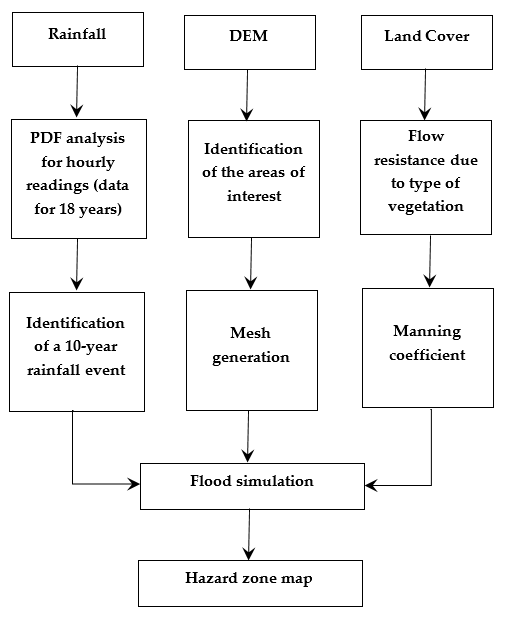
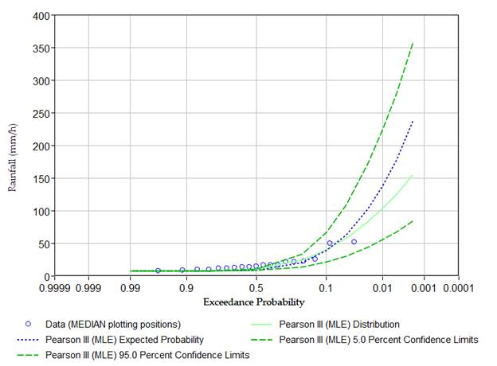
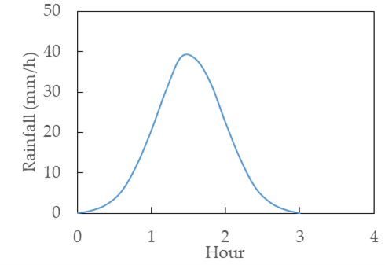

- How did we get to the flash flooding simulations?
Overall data flow for flash flooding simulations

- How did we define the intensity of the rain?
Data for the Kanawha River-Charleston area was retrieved from the NOAA NCDC (https://www.ncei.noaa.gov/cdo-web/), focusing on the Precipitation Hourly of the weather station located in Charleston, WV. Period of record: Aug/1/1996 - Jan/1/2014
Data was curated and analyzed in the HEC-SSP fitting the maximum annual rainfall events in the Probability Density Function (PDF) Pearson III by means of the Maximum Likelihood Estimators (MLE).

A maximum rainfall for a 10-year expected event was 38.68mm/h. The rain event followed a bell curve over a period of 3h. The duration of 3h is empirically defined, however, it is suggested between 1h and 3h for flash flooding events (Fowler et al., 2021). The rainfall development over time adjusted to a bell curve provided information of the rainfall impact under increasing, maximum and decreasing rainfall causing a total of 225 mm.
Fowler, H. J., Lenderink, G., Prein, A. F., Westra, S., Allan, R. Ban, N., Barbero, R., Berg, P., Blenkinsop, S., Do, H. X., Guerreiro, S. B., Haerter, J. O., Kendon, E., Lewis, E., Schaer, C., Sharma, A., Villarini, G., Wasko, C. and Zhang, X. (2021). Anthropogenic intensification of short-
duration rainfall extremes. Nature Reviews Earth & Environment, 2. pp. 107-122. ISSN 2662-138X doi: https://doi.org/10.1038/s43017-020-00128-6

- How did we retrieve the Digital Elevation Model (DEM)?
Raster files of the DEM were retrieved from the WV Elevation and LIDAR Download Tool (http://data.wvgis.wvu.edu/elevation/), using the more recent files.
- How did we incorporate Manning's
coefficient?
A raster file of the land cover was retrieved from the Multi-Resolution Land Characteristics Consortium (MRLC, https://www.mrlc.gov/) for the Kanawha River-Charleston, WV area. The raster file corresponded to the 2019 CONUS Land Cover. Then, QGIS was used to convert the raster file to a shapefile indicating the Manning Coefficient by following the table below.
Table 1. Manning coefficients for the categories of land cover (Mattocks and Forbes, 2008).
|
NLCD Number |
Land Cover |
Manning Coefficient |
|
11 |
Open water |
0.020 |
|
12 |
Perennial ice/snow |
0.010 |
|
21 |
Developed open space |
0.020 |
|
22 |
Developed low intensity |
0.050 |
|
23 |
Developed medium intensity |
0.100 |
|
24 |
Developed high intensity |
0.130 |
|
31 |
Barren land (rock/sand/clay) |
0.090 |
|
41 |
Deciduous forest |
0.100 |
|
42 |
Evergreen forest |
0.110 |
|
43 |
Mixed forest |
0.100 |
|
51 |
Dwarf scrub |
0.040 |
|
52 |
Shrub/scrub |
0.050 |
|
71 |
Grassland/herbaceous |
0.034 |
|
72 |
Sedge/herbaceous |
0.030 |
|
81 |
Pasture/hay |
0.033 |
|
82 |
Cultivated crops |
0.037 |
|
90 |
Woody wetlands |
0.140 |
|
91 |
Palustrine forested wetland |
0.100 |
|
92 |
Palustrine scrub/shrub wetland |
0.048 |
|
95 |
Emergent herbaceous wetlands |
0.045 |
Mattocks, C., and C. Forbes, 2008: A real-time, event-triggered storm surge forecasting system for the state of North Carolina. Ocean Modell., 25, 95-119.
- How did we define the hazard intensity map?
The Swiss method is a combination of the maximum water depth and the product of the water depth and velocity (Somos et al., 2016).
Somos-Valenzuela, M. A., Chisolm, R. E., Rivas, D. S., Portocarrero, C., and McKinney, D. C.: Modeling a glacial lake outburst flood process chain: the case of Lake Palcacocha and Huaraz, Peru, Hydrol. Earth Syst. Sci., 20, 2519-2543, https://doi.org/10.5194/hess-20-2519-2016, 2016.
- Any extra information you believe might be
helpful?
Infiltration was not considered to simplify simulations and challenging methods to identify proper settings. Additionally, flash flooding is happening in a short period of time, then, infiltration may become marginal; this assumption is valid for soils with minimum content of sand, which is our case (https://websoilsurvey.nrcs.usda.gov/app/).
Evapotranspiration was not included in these simulations since it is a marginal effect during a 3h-period of the rainfall.
Raster files used in these simulations were not edited so infrastructure such as culverts, bridges and other special constructions draining water were not considered in these simulations.
- What were the materials and methods?
The areas of interest were defined as a draining area that contributes to the Kanawha River, WV by means of a polygon determined in https://www.epa.gov/waterdata/waters-geoviewer. Such polygon was a GEOJSON file used in QGIS. Using the RiverFlow2D plugin from Hydronia (https://www.hydronia.com/riverflow2d) the simulation needed the following information: 1) Raster file of the topography or DEM. 2) The shapefile determining the Manning coefficient which was determined from the raster file of the land cover after a conversion to a shapefile with the Manning coefficient as an attribute. 3) The precipitation regime described by the bell curve, and 4) The outflow which was defined manually in the lower zone of the area of interest.
First, the RiverFlow2D project was created with a coordinate reference system EPSG 32617. Second, a triangular mesh was generated with 20m of the element size resolution. Third, the files were exported to RiverFlow2D engine. Fourth, settings for the simulation were as follows: a) simulation time 3h, b) output interval 0.1h, c) Courant number (CFL) equal to 1, d) the rainfall/evaporation component was activated, e) with output maximum and output hazard files and f) dry bed initial conditions. Fourth, it was used the RF2D Animation to generate the velocity field animation. Fifth, it was used the Hazard Intensity Maps in the Results vs Time to choose the Swiss Method for Water Flooding in order to generate a shapefile with the three categories (low, medium and high hazard zone).
CREDITS
Yhocsan Uzzi Guevara Garcia (essyhocsan@gmail.com): Conceptualization, Methodology, Software, Data Curation
Fernando Rojano Aguilar (fernando.rojano@wvstateu.edu): Conceptualization, Methodology, Software, Data Curation, Editing & Writing